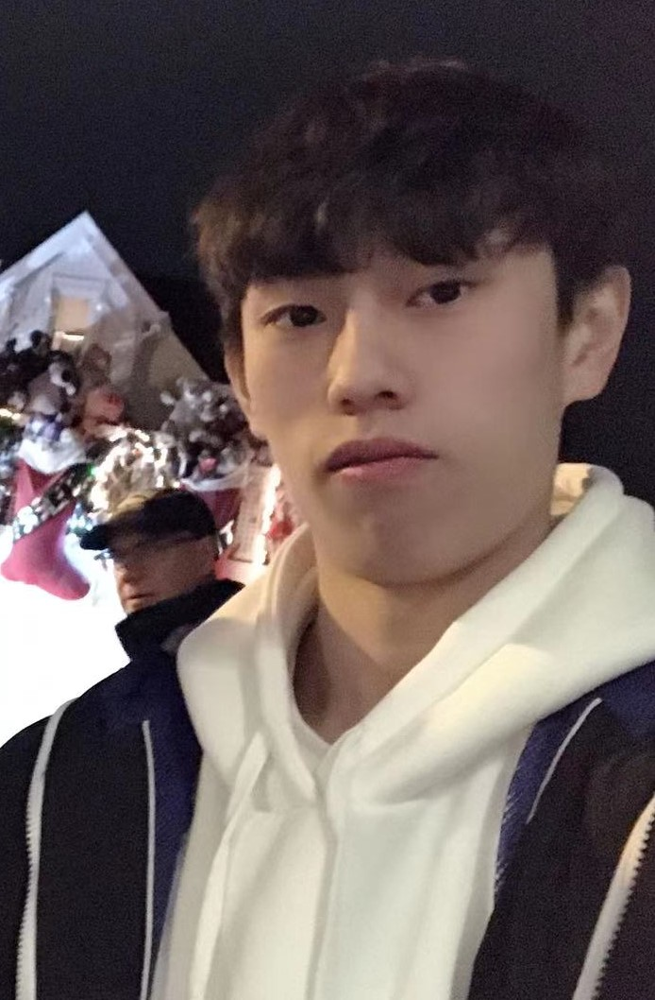

Hi everyone, welcome to my website for Visual Media Design 105. My name is Henry. This website contain project that I had created throughtout the course while learning to use Photoshop, Illustration, Animation, and InDesign.
The reason I am taking this class because it was a major requirement for me. However, taking this class, I learned a lot of design skills. I am thinking of transforing to San Jose State to finished my Visual Media Design certificant.